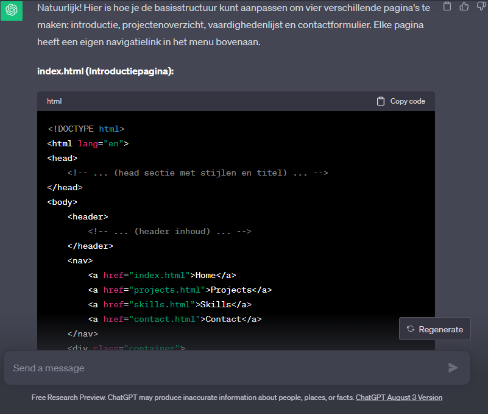

Hallo, ik ben de eigenaar van deze site, Damian Sloos.
Ik ben Damian, ik ben 18 en zit op dit moment in 6 Vwo op het vlietlandcollege. Ik doe het profiel natuur en techniek, met als extra vakken: "beco, frans en informatica", ook heb ik al een havo diploma.. Mijn hobbys zijn boulderen, gamen en slapen.
Ik heb ook een leuk motto: "waarom makkelijk doen als het moeilijk kan?"
Deze site was gemaakt als opdracht voor informatica. De basis voor de site was gemaakt door chatgpt, daarna heb ik zelf op w3schools de code gevonden om de site groter te maken. Opzich was het handig om voor het eerste stukje van de site chatgpt te gebruiken, je krijgt dan een heel stuk code in een paar seconden en dan is het even snel copy-pasten. Daarna daarentegen kan chatgpt wel helpen met code voor speciale dingetjes, maar dan moet je wel zelf nog de code veranderen zodat het goed in de site past. Een heel mooi voorbeeld hiervoor was het laten werken van het contactformulier, je vraagt aan chatgpt om alle code, dit vul je zelf in, nu heb je dus de javascript en PHP code. Als je dan probeert om het contactformulier te krijgen gebeurt er niks, PHP wordt niet ondersteund en door de foutcodes in te vullen krijg je op een gegeven moment een andere manier waar het wel door werkt. Chatgpt lost het dan op, maar je moet nog steeds zelf kijken waar de fouten zitten en waardoor het niet werkt.
